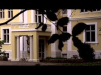
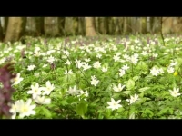
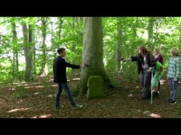
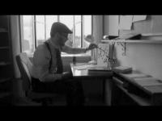
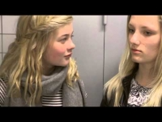
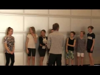
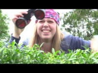

Mit Møn
1 / +

2 / +
3 / +

Møn vrimler med gode historier. Fra mytologisk ladede eventyr fra fortryllet skov over æterisk panteisme til jordnære fortællinger om handlekraftige mennesker før og nu.
For eksempel historier fra 2. Verdenskrig. Eller historier om de mange oldtidsminder, eller nutidige fortællinger om livets gang på Møn.
Der er historier om bonde, fisker og håndværker, rig og fattig, høj og lav, historier fra godser og hytter.
Har du har en historie om eller fra Møn, som du vil fortælle på film, kan du henvende dig til Filmfabrikken. Hvis historien er god og realiserbar, vil Filmfabrikkens lærere hjælpe dig med at filme dit projekt.
Nordisk Film Camp
1 / +
2 / +

3 / +

I sommeren 2014 afholdt Filmfabrikken i samarbejde med Danske Børne- og Ungdomsklubber Nordisk Film Camp. Fra 30. juni – 4. juli 2014 dannede Filmfabrikken og Teaterhøjskolen Rødkilde ramme om 24 børn og unge fra hele Norden.
Børn og unge, der producerede film, samarbejdede, netværkede og oplevede den mønske natur.
Præstø skole går til filmen
1 / +
2 / +
3 / +

Alle 7. og 8. klasser, henholdsvis 2 og 3, på Præstø Skole har i foråret 2016 sammen med Filmfabrikken produceret i alt 6 film.
Eleverne har selv haft hånd over og styr på forløbet fra idé til færdig film. Og efterfølgende premierer i Bio Bernhard med rød løber, sodavand og chips samt tordnende klapsalver og almindelig beundring.
Alle film er produceret på én uge, hvor Filmfabrikkens og klassernes lærere har stået bi med råd og dåd, men hvor eleverne selv har haft fingre i alle filmprocessens discipliner.
Alle elever har flittigt fundet fælles fodslag i et et kreativt samarbejde, for film er bestemt teamwork, hvor ingen kæde er stærkere end det svageste led.